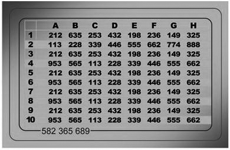
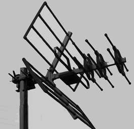

Monitoratge de xarxes
Per controlar i garantir un bon nivell de qualitat de servei en les xarxes, cal disposar dels mecanismes de monitoratge i control adequats. D’altra banda, cal tenir mecanismes perquè només els usuaris legítims puguin fer ús de les xarxes i que ho facin en els termes que estableixin els administradors de sistemes o els encarregats de gestionar l’ús de la xarxa.
Les xarxes transporten paquets d’informació que contenen tant dades finals per ser intercanviades pels usuaris i aplicacions com dades necessàries per al bon funcionament de la xarxa (per exemple, dades d’encaminament, dades de control de la integritat de la informació…). El monitoratge de les xarxes és el conjunt d’eines i mecanismes que es fan servir per analitzar la informació que és transportada a través de la xarxa i, a partir d’aquestes anàlisis, poder extreure informació sobre el seu funcionament.
Inventari i control dels serveis de xarxa
Les xarxes estan formades per un conjunt de maquinari i programari interconnectat, sia per mitjà de cable o de tecnologies Wi-Fi, Bluetooth, etc. El fet de tenir xarxes permet compartir informació i recursos, de manera que els processos esdevenen més eficients.
Les xarxes poden ser molt grans o petites. Les xarxes domèstiques comprenen un conjunt petit de computadores, impressores i altres recursos d’ús domèstic. Les xarxes corporatives poden ser molt complicades i abraçar extensions geogràfiques molt grans.
En el cas de xarxes complexes és imprescindible gestionar-les correctament per garantir-ne un bon funcionament, tant en termes de rendiment com en termes de seguretat.
S’ha de tenir un control sobre quins són els recursos que formen part de la xarxa i com poden interactuar entre ells. En una multinacional, un empleat de la seu de Houston no ha de tenir accés, necessàriament, a una impressora de la seu de Sidney. Saber quins recursos formen part de la xarxa fa que detectar intrusos que no autoritzats sigui més senzill.
Els responsables de gestionar la xarxa també han de controlar quins serveis estan permesos en cada cas. Per exemple, hi ha xarxes en què serveis de missatgeria instantània no estan permesos per tal d’evitar possibles distraccions dels usuaris.
La configuració, el manteniment i la gestió d’una xarxa pot ser una tasca complicada. S’han de monitorar els equips i els serveis crítics, els usuaris dels recursos de la xarxa, el rendiment d’aquesta mateixa xarxa, l’aparició de possibles atacants, etc.
A l’hora d’inventariar i controlar els serveis d’una xarxa s’han de tenir en compte el factors següents:
- Rang d’adreces IP
- Inventari d’adreces MAC
- Ports
- Serveis de xarxa actius
- SNMP
Rang d'adreces IP
L’adreça IP d’un equip l’identifica dins una xarxa. Una adreça IP està formada per quatre octets, que normalment es representen amb quatre números, de 0 a 255. Per exemple: 10.23.56.250.
Els serveis de la xarxa utilitzen les adreces IP per poder encaminar la informació entre diferents equips. Dins una mateixa xarxa, no hi pot haver dos equips amb la mateixa adreça, ja que això provocaria un conflicte d’adreces.
Hi ha uns rangs d’adreces IP que són reservats, és a dir, que no es fan servir en l’àmbit d’Internet. Això permet que es puguin fer servir de manera interna dins una xarxa corporativa o domèstica. Els rangs de les adreces IP que hi ha són els següents:
- 10.0.0.0 ↔ 10.255.255.255
- 172.16.0.0 ↔ 172.31.255.255
- 192.168.0.0 ↔ 192.168.255.255
Els equips dins una xarxa faran servir adreces IP de rangs reservats, però quan es comuniquin amb equips de fora de l’àmbit de la xarxa ho faran amb una IP no reservada. Normalment, aquesta gestió de canvi d’IP la fa l’encaminador de la xarxa.
Adreces dinàmiques enfront d'adreces estàtiques
Hi ha dues maneres d’assignar les adreces IP als equips, mitjançant adreces dinàmiques o bé mitjançant adreces estàtiques.
Les adreces dinàmiques fan servir protocols com el DHCP. Quan un equip es connecta a la xarxa se li assigna una adreça dins el rang de la xarxa que no s’estigui utilitzant en aquell moment. Les adreces estàtiques relacionen equips amb adreces IP. Això vol dir que un equip, sempre que es connecti, tindrà la mateixa adreça IP.
Les adreces dinàmiques són més fàcils de gestionar perquè s’assignen de manera automàtica. Tanmateix, ofereixen menys garanties que les adreces estàtiques, ja que en aquestes últimes es controla quins equips poden tenir una adreça IP.
Inventari d'adreces MAC
El codi MAC equival a la matrícula dels automòbils. És un conjunt de números que identifica de manera unívoca un dispositiu. No hi pot haver dos dispositius amb el mateix MAC.
Un mètode que es fa servir per assignar adreces IP de manera estàtica és fer-ho a partir del MAC dels equips de la xarxa. Segons el MAC de l’equip que es connecta se li assigna una IP, de manera que es controla quins equips tenen dret a tenir una IP.
Ports
Les xarxes fan servir els protocols TCP o UDP per a les comunicacions. Aquests protocols permeten la definició de ports perquè les aplicacions i els serveis es puguin comunicar de manera directa.
El port més conegut és el port 80, que identifica el servei HTTP. Quan un navegador accedeix a un URL, està accedint a un equip remot i, en concret, a l’aplicació que és en el port 80. Aquesta aplicació serà típicament un servidor web que escoltarà peticions HTTP i les respondrà.
HTTP és només un dels serveis que hi pot haver en una xarxa, però hi ha molts serveis possibles que hi poden funcionar. Cada servei utilitza un port concret.
Els administradors de la xarxa s’han d’encarregar d’inventariar quins serveis han d’estar actius en quins equips de la xarxa.
Els equips es poden configurar per establir quins ports poden estar actius. Els ports que no cal utilitzar han d’estar tancats o inactius. Tenir ports oberts sense cap finalitat és un risc molt important per a la seguretat, ja que una aplicació malintencionada ho podria utilitzar per accedir a la màquina.
Serveis de xarxa actius
En una xarxa de dimensions grans hi pot haver un gran nombre de serveis funcionant. Alguns d’aquest serveis poden ser específics, però, en general, hi haurà serveis genèrics que es poden trobar en la majoria de les xarxes.
Cada servei fa servir un port específic. Si hi ha dos serveis que utilitzen el mateix port, hi pot haver conflictes. Per evitar aquests problemes, el port que utilitza cada servei ja està estandarditzat.
La IANA (Autoritat d’Assignació de Dominis d’Internet, Internet Assigned Numbers Authority), és a dir, l’autoritat d’Internet pel que fa a l’assignació de números, defineix quins són els serveis de xarxa més comuns i en quins ports es troben.
- Logotip de la IANA
- HTTP és la sigla dels termes anglesos hypertext transfer protocol, és a dir, protocol de transferència d’hipertext. L’hipertext és el terme originari amb el qual es feia referència a les pàgines web.
L’HTTP és el protocol web i fa servir el port 80. - HTTPS és la sigla d’HTTP segur. Amb el pas del temps es va veure que l’HTTP tenia mancances de seguretat molt importants, que són un risc per segons quins tipus de transaccions, com ara les compres en línia.
Netscape va desenvolupar l’SSL (secure socket layer), que permet afegir seguretat a les transaccions HTTP. D’aquesta manera va néixer l’HTTPS, que funciona pel port 443. - SSH és la sigla dels termes anglesos secure shell. És el mecanisme més utilitzat per poder accedir a màquines remotes i poder operar-hi.
Aquest protocol permet connexions autenticades i segures. Tot i així, les màquines que hagin de complir mesures de seguretat extremes han de deshabilitar-lo i permetre-hi només accés físic.
L’SSH funciona pel port 22. - FTP és la sigla dels termes anglesos file transfer protocol, és a dir, protocol de transferència de fitxers. És un dels mecanismes més utilitzats per intercanviar fitxers entre maquines remotes d’una mateixa xarxa.
S’ha de controlar quins usuaris tenen dret a transferir fitxers a quines màquines.
L’FTP funciona pel port 20. - Messenger. Les eines de missatgeria instantània utilitzen ports específics per realitzar les comunicacions. Tot i que hi ha empreses que les fan servir com a missatgeria interna entre els treballadors, n’hi ha d’altres que opten per tancar el port i deshabilitar-lo.
Actualment, però, hi ha eines de missatgeria que utilitzen el port 80 per comunicar-se, cosa que fa que als administradors els sigui més difícil controlar-les.
El Messenger, que és una de les eines de missatgeria més esteses, utilitza el port 1863.
SNMP
SNMP és la sigla dels termes anglesos simple network management protocol , és a dir, protocol simple d’administració de xarxes.
L’SNMP permet la gestió simple, remota i centralitzada dels recursos d’una xarxa, ja que pot detectar-hi punts de fallida, rendiments, etc.
Una xarxa administrada mitjançant SNMP utilitza tres tipus de components:
- Dispositius administrats
- Agents
- Sistemes administradors de la xarxa
Un dispositiu administrat és un punt de la xarxa que té un agent SNMP. Els agents recullen i emmagatzemen informació per a l’administració de la xarxa i l’envien als sistemes administradors.
Els dispositius administrats poden ser qualsevol element que formi part de la xarxa, des d’encaminadors (routers) fins a impressores, servidors d’aplicacions, tallafocs…
Els agents són petits mòduls de programari que resideixen en els dispositius administrats. Els agents tenen coneixement local de la informació del dispositiu en què resideixen (memòria lliure, rendiment del dispositiu, etc.). Els agents tradueixen aquesta informació a un format compatible amb l’SNMP i l’envien als sistemes administradors.
Els sistemes administradors executen aplicacions que supervisen i controlen els dispositius administrats de manera centralitzada.
Hi ha tres versions d’SNMP: SNMPv1, SNMPv2 i SNMPv3. L’SNMPv2 ofereix certes millores i funcionalitats envers la primera versió. L’SNMPv3 ofereix seguretat respecte de les versions anteriors, ja que les comunicacions entre els elements poden anar xifrades.
Fraus informàtics i robatoris d'informació; enginyeria social
Una de les màximes més importants que cal tenir en compte quan es tracta de la seguretat és que la cadena sempre es trenca per la baula més dèbil.
Actualment, els equips informàtics cada cop tenen més sistemes tecnològics que permeten que usuaris malintencionats puguin fer un ús fraudulent d’equips no legítims.
Els sistemes operatius incorporen de sèrie tallafocs simples. Tanmateix, poden ser efectius contra cavalls de Troia (Trojans) i cucs (worms). La majoria de programes s’actualitza automàticament per anar solucionant forats de seguretat i cada cop hi ha més antivirus d’ús gratuït per a usuaris finals.
Antivirus en la xarxa
Per tal que un antivirus sigui efectiu, ha d’anar actualitzant la base de dades de virus per detectar les amenaces noves que vagin apareixent. Avui dia, hi ha alternatives d’ús gratuït, com l’Avast o l’Avira, que permeten tenir un antivirus que actualitza automàticament la base de dades d’amenaces.
Actualment, els equips informàtics cada cop tenen més sistemes tecnològics que permeten que usuaris malintencionats puguin fer un ús fraudulent d’equips no legítims.
Atès que els hackers cada cop tenen més dificultats per poder cometre els delictes, sovint fan servir tècniques d’enginyeria social que es basen en la màxima següent: “Els usuaris són la baula més feble de la seguretat”.
L’ús dels preceptes de l’enginyeria social és molt anterior a l’aparició de la informàtica i sempre hi ha hagut delinqüents que han comès fraus mitjançant enganys. Estafes com el tocomocho o l’estampeta són els avantpassats d’enganys actuals, com la pesca (phishing), el descaminament (pharming) o les cartes nigerianes.
Des del punt de vista de la seguretat informàtica, l’enginyeria social és la pràctica d’aconseguir informació confidencial per mitjà de la manipulació o l’engany d’usuaris legítims.
Normalment, la informació que els atacants volen aconseguir són dades bancàries o altres dades de caràcter confidencial que els permetin accedir a sistemes informàtics de manera il·legítima.
Segons defineixen alguns hackers, l’enginyeria social es basa en quatre preceptes. Són els següents:
- A tots ens agrada ajudar els altres.
- No ens agrada crear problemes o dir que no.
- La primera impressió envers l’altra persona sempre és de confiança.
- A tothom li agrada que l’alabin.
L’exemple més estès d’estafes mitjançant els mitjans informàtics és l’enviament de correus electrònics en què l’emissor es fa passar per algú que explica una història falsa. S’espera que l’usuari se la cregui per poder-lo estafar.
Pesca (phising)
- La pesca consisteix a utilitzar eines informàtiques per fer picar l'ham els usuaris mitjançant la suplantació d'identitat.
Phising és un terme que prové del verb anglès fish (els hackers fan servir la ph en comptes de la f per comunicar-se entre ells), que traduït literalment al català voldria dir‚ pesca . Els que realitzen aquesta activitat s’autoanomenen phishers (pescaires).
El terme pesca fa referència al fet que l’activitat que amaga és aconseguir que els usuaris mosseguin l’ham d’algun engany per perpetrar un frau.
Hi ha altres teories pel que fa a l’origen i el significat de la paraula phishing. Alguns diuen que és la sigla de password harvest fishing, que traduït al català seria ‘collita i pesca de contrasenyes’. Tot i que hi ha teories diferents, el significat final és el mateix.
Estafes bancàries
La pesca com a tal inclou qualsevol tipus d’estafa que utilitzi tècniques d’enginyeria social per captar dades confidencials. Tanmateix, és coneguda especialment per les estafes en el sector bancari.
Amb l’aparició de la banca en línia, que permet fer operacions bancàries per mitjà del web, van començar a aparèixer els primers atacs de pesca.
L’estafa de la pesca consisteix a enviar un correu electrònic en què el remitent es fa passar per una entitat bancària, o un ens que hi està relacionat, per demanar a l’usuari que introdueixi les seves dades confidencials en una web fraudulenta.
El correu electrònic redirigeix l’usuari a l’adreça d’una pàgina que s’assembla a la pàgina real de la seva entitat bancària, però que, en realitat, és una web fraudulenta.
Per enganyar el receptor del correu, l’adreça de la pàgina fraudulenta és molt semblant a la de la pàgina original. També es fan servir caràcters especials que despisten el receptor confiat.
Per exemple, l’adreça de correu www.elmeubanc.com@bancfals.com pot fer que un usuari cregui que accedirà al seu banc, però en realitat accedirà a un banc fals. Aquests són els tipus d’estratagemes que fan servir els pescaires.
Quan l’usuari confiat accedeix a l’URL fals, se li demana que hi introdueixi les dades bancàries: número de targeta de crèdit, usuari i contrasenya de la seva banca en línia, etc.
Si els pescaires aconsegueixen extreure’n prou informació, poden suplantar la identitat de l’usuari i, per tant, fer pagaments per Internet a compte de l’usuari estafat.
Mecanismes contra la pesca
La mesura de seguretat principal contra la pesca, i també contra els altres fraus que es basen en enginyeria social, consisteix a conscienciar i educar els usuaris envers aquests tipus de riscos.
La majoria d’atacs de pesca es poden detectar si s’aplica una mica de sentit comú. De vegades arriben correus en anglès que fingeixen ser del nostre banc. La majoria d’aquestes vegades no hi ha cap dada personal que denoti que el remitent coneix el receptor del correu.
Es pot aplicar la norma general següent: no fer cas de cap correu electrònic que demani dades personals.
Les entitats bancàries no acostumen a fer servir el correu electrònic per comunicar-se amb els clients. En cas de dubte, és recomanable que, per introduir dades al portal de banca en línia o al de qualsevol altra entitat, no s’utilitzin els enllaços que hi pugui haver en un correu, sinó que s’introdueixi l’adreça manualment.
A més de les mesures de conscienciació dels usuaris, també hi ha mesures tecnològiques per combatre la pesca. L’ús de targetes de coordenades és un element de seguretat que protegeix els usuaris.
- 
- Les targetes de coordenades són un dels mecanismes més estesos per assegurar les transaccions bancàries que es fan per Internet.
Per fer operacions per mitjà d’Internet no n’hi ha prou amb conèixer el nom d’usuari i la contrasenya del client, sinó que, a més a més, cal introduir en la pàgina uns números secrets que són en una targeta. Encara que un pescaire aconsegueixi les dades de banca en línia d’un client, no podrà perpetrar cap estafa si no té aquesta targeta de coordenades.
Hi ha programari que aplica un filtre en el correu entrant per evitar que hi arribin correus brossa (spam), de falsa alarma (hoax) o de pesca. Aquest programari s’executa en els servidors de correu. Els correus web més populars incorporen aquests mecanismes per millorar el servei als seus usuaris.
El problema que hi ha amb els filtres de correu és que no són completament efectius i sempre hi ha correus fraudulents que passen el filtre. També hi ha el problema dels falsos positius, és a dir, correus autèntics que es consideren fraudulents i, per tant, no arriben al destinatari. S’ha d’ajustar la sensibilitat dels filtres per tal d’evitar que hi entrin massa correus fraudulents, però també perquè no hi hagi gaires falsos positius.
Hi ha empreses que es dediquen a posar a prova les entitats que ho contracten. Per fer-ho, fan arribar correus fraudulents a treballadors de l’entitat per veure si mosseguen l’ham. Aquesta pràctica s’anomena phising spear i permet verificar la maduresa dels treballadors d’una empresa envers aquests tipus de fraus.
Falsa alarma (hoax)
Hoax és una paraula anglesa (literalment, ‘engany’) que en català és falsa alarma. En l’àmbit de la seguretat informàtica, es fa servir per designar els correus electrònics que expliquen una història falsa i intenten que el lector la consideri real.
L’objectiu dels correus és que el destinatari els reenviï a tants contactes com sigui possible perquè ells facin el mateix i, així, aquests correus es vagin difonent per la xarxa. A vegades, a aquesta classe de correus també se’ls anomena correus cadena.
De vegades, els originadors d’aquestes històries falses només busquen aconseguir notorietat o difamar i difondre l’engany per la xarxa. En altres casos, l’objectiu del reenviament dels correus és aconseguir tantes adreces electròniques com sigui possible.
Les adreces dels correus electrònics viatgen a la capçalera dels missatges sense xifrar. Els distribuïdors de les falses alarmes fan cerques amb paraules clau del missatge pel trànsit d’Internet i agafen la informació de les capçaleres en què hi ha les adreces electròniques de les persones a qui s’ha anat reenviant el missatge.
A partir de la distribució de falses alarmes, es configuren bases de dades d’adreces de correu electrònic que després es fan servir per enviar correu brossa o fer fraus de pesca.
Les històries que hi ha darrere les falses alarmes són molt variades. Poden explicar els casos de persones que necessiten ajuda o bé alguna història que generi alarma social, com l’aparició d’un virus nou o alguna curiositat.
Abans de reenviar un correu a tots els nostres contactes, és molt recomanable fer una cerca a la xarxa per veure si la història és certa o falsa.
Descaminament (pharming)
Pharming és un altre anglicisme. En català, l’equivalent és descaminament. Està relacionat amb la pesca. És una tècnica que es fa servir en els fraus d’enginyeria social i utilitza la vulnerabilitat dels DNS.
Els DNS (sistema de noms de domini, domain name system) són els encarregats de traduir un nom de domini a la IP corresponent. El nom de domini és el que els humans recordem i fem servir per posar l’adreça al navegador. Per exemple: www.google.com.
L’adreça IP és la matrícula que un servidor té dins la xarxa. Aquesta matrícula permet identificar unívocament una màquina dins Internet. Els DNS són els que tenen la informació sobre quin nom de domini correspon a cada matrícula.
Si la informació que contenen els DNS es pot alterar (atacs de DNS poisoning), cosa que significa que usuaris d’un domini determinat podrien ser desviats a una màquina il·legítima.
Seria possible fer que, en intentar accedir a www.google.com, s’accedís a un servidor que no fos el de Google.
Mitjançant aquesta classe d’atacs, els pescadors poden fer creure a les víctimes que accedeixen a la web de la seva entitat bancària mentre que, en realitat, les redirigeixen a una web fraudulenta que pretén robar-los les dades personals.
La seguretat dels DNS cada dia és més robusta i és molt difícil que es produeixin aquest tipus d’atacs. Quan apareixen vulnerabilitats noves, s’esmenen amb celeritat, però sempre hi ha risc que els atacants les puguin utilitzar.
Cartes nigerianes
Les cartes nigerianes són una estafa que també es coneix amb altres noms, com estafa 419, que fa referència al codi penal que incompleix.
Les cartes nigerianes són una estafa que es produeix per mitjà de correu brossa. En aquest correu, es promet al receptor que rebrà grans sumes de diners si participa en una operació de blanqueig de diner.
Hi ha diverses variants de les cartes nigerianes. Una de les més habituals consisteix en el fet que qui envia el correu es fa passar per un treballador bancari. L’estafador explica que un client amb el mateix nom que el de la víctima ha mort en un accident. Aquest client ha deixat una suma molt elevada de diners, però no té cap hereu. Promet un percentatge de la fortuna a la víctima si, a canvi, es fa passar per aquesta persona i blanqueja els diners. En un moment del procés, quan la víctima mossega l’ham i es creu la història, se li demana una quantitat de diners per avançar les gestions. De vegades, la víctima fins i tot arriba a viatjar al país de l’estafador per fer la suposada operació, cosa que resulta especialment perillosa.
El nom de cartes nigerianes prové del fet que la majoria d’estafadors que es dediquen a aquesta activitat procedeixen de Nigèria. Aquesta estafa és anterior a l’existència d’Internet. Abans es duia a terme per mitjà de cartes manuscrites.
Hi ha internautes que es dediquen a enganyar els estafadors des de comptes de correu ficticis i els fan creure que han picat l’ham. Amb aquesta activitat fan perdre temps als estafadors. Els que es dediquen a aquesta activitat s’anomenen scam baiters. L’expressió prové de l’anglès, scam vol dir ‘estafa’ i baiter, ‘esquer’.
Publicitat i correu brossa
La publicitat és un recurs que s’utilitza per fer conèixer un producte a consumidors potencials. La publicitat és una eina de venda molt antiga que es pot dur a terme per mitjà de molts canals. Originàriament, la publicitat es feia de boca en boca. Més endavant, la irrupció dels mitjans de comunicació va fer que la publicitat pogués arribar de manera simultània a un nombre molt elevat de consumidors potencials.
Els mitjans de comunicació fan negoci de la publicitat. D’aquesta manera, tant premsa escrita com ràdio i televisió tenen una font molt important d’ingressos en la publicitat.
L’aparició d’Internet ha revolucionat el món de la publicitat. Els costos hi són molt més baixos que en els mitjans de comunicació, cosa que permet que hi accedeixin més anunciants. Internet permet conèixer força els gustos i els costums dels usuaris de la xarxa. Per tant, la publicitat pot anar molt més dirigida a un usuari determinat. Això no és tan factible en mitjans de comunicació com la ràdio, en què es desconeix quins són els hàbits dels oients.
Actualment, la publicitat per Internet mou una gran suma de diners. Fa que empreses com Google ingressin més beneficis per mitjà de publicitat que no pas els que Microsoft ingressa amb la venda de sistemes operatius.
La publicitat lícita a Internet i als mitjans telemàtics no és diferent de la que hi ha en altres mitjans de comunicació. El problema rau en la publicitat il·lícita o no desitjada.
Internet té la particularitat que és un mitjà obert i té uns nivells de regularització molt baixos. Això permet que tothom pugui fer lliure ús de la xarxa i, per tant, és molt més vulnerable a actes no lícits.
Seria molt difícil imaginar que algú pogués fer un anunci de manera no lícita per ràdio o televisió, perquè el mitjà està sota control. En canvi, a Internet és molt senzill.
La publicitat no desitjada no és una exclusiva d’Internet. De fet, és molt anterior a Internet. L’enviament de tríptics comercials a les bústies de casa també és una manera de publicitat no desitjada. La diferència que hi ha entre la publicitat a Internet i el correu comercial és que els costos de la publicitat a Internet són molt baixos. A més a més, en el cas del correu comercial, els costos els assumeix l’anunciant, mentre que en la publicitat per Internet no.
Si traslladéssim el problema de la publicitat no desitjada del món virtual al real seria com si tothom pogués enviar correu comercial sense pagar res. D’aquesta manera, correus n’assumiria el cost i l’enviament. Hi hauria cent tríptics de correu comercial per cada carta i els carters no donarien l’abast.
Origen de la publicitat i el correu no desitjat
- L'spam fa referència al correu fraudulent.
Correu brossa (spam) és el nom genèric que es dóna a qualsevol tipus de comunicació no desitjada que es fa de manera electrònica.
L’origen del terme spam prové d’un tipus de pernil de llauna molt popular a Anglaterra durant els anys setanta. El grup humorístic anglès Monty Python té un gag en què uns víkings van a un restaurant i demanin el plat que demanin, sempre els el porten amb pernil SPAM.
El gag del grup Monty Python va servir d’inspiració per batejar el correu no desitjat amb el nom de spam, ja que és un element que, encara que no el demanis, te l’envien.
El primer incident de correu brossa que hi ha registrat és anterior a Internet. Va succeir a la xarxa ARPANET, que és la que precedeix Internet. Es va enviar l’aparició d’un model nou de computadora a un grup d’enginyers.
L’explosió del correu brossa va tenir lloc a mitjan anys noranta, quan Internet es va fer accessible al gran públic. Des de llavors, la proliferació de correus brossa no ha parat d’augmentar. Es calcula que actualment entre el 80% i el 85% dels missatges que circulen per Internet són correu brossa.
Tipus de publicitat no desitjada
El cas més habitual de correu brossa és el que es du a terme mitjançant l’enviament de correus electrònics. Tanmateix, també s’utilitzen altres mecanismes.
- Correu electrònic. És sens dubte el mitjà per excel·lència que fan servir els que envien correu brossa, anomenats spammers. És un mitjà molt senzill, econòmic, ràpid i a l’abast de tothom.
La quantitat de correus electrònics no desitjats que circulen per la xarxa és molt més elevada que la de correus electrònics lícits. - Finestres emergents. L’enviament de correu brossa per mitjà de finestres emergents (en anglès pop-up windows) consisteix a enviar un missatge no sol·licitat que emergeix quan ens connectem a Internet (veieu la figura).
Els missatges no desitjats apareixen en forma de quadres de diàleg i advertències del sistema operatiu Windows amb el títol servei de visualització de missatges.
Aquest mecanisme fa ús d’una funcionalitat de versions antigues del sistema operatiu, que permet a un administrador de xarxes enviar missatges a altres lloc de la xarxa.
El més senzill per evitar aquest tipus de correu brossa és deshabilitar el servei o fer servir un tallafoc.
- Spim. L’spim fa referència a la publicitat no desitjada que s’envia per mitjà d’eines de missatgeria instantània. El nom prové de fusionar les paraules spam i IM (sigla de missatgeria instantània).
La missatgeria instantània és una eina que cada vegada es fa servir més. S’utilitza tant en l’àmbit particular per comunicar-se amb familiars i amics com en l’àmbit professional per comunicar-se amb companys de feina.
Els nivells de spim són molt més baixos que els de correu brossa per correu electrònic. Tanmateix, actualment es veu que aquest tipus de publicitat no desitjada està augmentant. - Spamdexing. El terme spamdexing (falsejament d’índexs) s’obté de fusionar el terme spam i el terme indexing, que ve de l’anglès i significa ‘indexar’. Fa referència a la publicitat no desitjada que es pretén propagar per mitjà dels cercadors d’Internet.
Els cercadors funcionen mitjançant la indexació de les pàgines web. D’aquesta manera, quan algú cerca algun terme en un cercador, aquest cercador consulta l’índex que té.
El falsejament d’índexs consisteix a falsejar els indexadors dels motors de cerca per tal que quan algú hi cerqui algun terme, vagi a parar a pàgines web que tenen publicitat il·lícita. - Altres tipus. Hi ha molts altres tipus de mecanismes per propagar publicitat no desitjada com, per exemple, posar comentaris en blocs que tenen molts lectors, posar entrades en fòrums, fer publicitat en llocs wiki o fer publicitat per mitjà de missatges no desitjats en jocs en línia.
Costos associats al correu brossa
Els costos directes i indirectes que provenen del correu brossa estan estimats en desenes de milions de dòlars a escala mundial.
El primer cost directe imputable al correu brossa és l’ús de xarxes i computadores. La majoria de les comunicacions que es produeixen a Internet són de correu brossa, de manera que el rendiment d’Internet empitjora.
És difícil distingir els missatges lícits i el correu brossa. Tot i així, hi ha filtres de correu brossa i altres eines que en minimitzen l’impacte. El desenvolupament i la implantació d’aquestes eines és un peatge que s’ha de pagar per tenir accés a Internet.
De vegades, els spammers utilitzen virus per infectar ordinadors d’usuaris i fer-los servir com a emissors de correu brossa. El virus infecta aquests ordinadors, anomenats zombies, i fa que en disminueixi el rendiment.
Més enllà dels costos merament tecnològics, un dels grans costos del correu brossa és l’impacte que té sobre el rendiment dels usuaris d’Internet. Al llarg del dia es perd molt de temps discriminant els correus lícits dels correus brossa.
Mesures contra el correu brossa
Tot i que és molt difícil combatre el correu brossa, cada vegada apareixen filtres més sofisticats que en minimitzen l’impacte. De totes maneres, el millor per evitar el correu brossa és la prevenció. Hi ha una sèrie de recomanacions que fan més difícil la tasca dels spammers.
- No contestar mai els correus brossa. Contestar un correu brossa, encara que sigui per dir que no en volem rebre més, serveix a l’atacant per saber que el compte de correu està actiu.
Els spammers s’acostumen a passar o a vendre llistes de correus electrònics. D’aquesta manera, només cal que un spammer sàpiga que es tracta d’un compte actiu perquè altres comencin a enviar-hi publicitat.
Els justificants de recepció de correu tampoc s’han d’acceptar mai, perquè envien un senyal d’avís als spammers que els indica que el compte està actiu. - No clicar al damunt de les imatges dels correus brossa. Una manera subtil que tenen els spammers de saber que un compte de correu està actiu és per mitjà dels enllaços (links) que hi ha en el correu.
Si s’accedeix a algun dels enllaços de les imatges, es redirigeix l’usuari a un servidor que anota l’adreça de correu electrònic i avisa l’spammer. - Anar en compte a l’hora de donar l’adreça electrònica. L’adreça electrònica només s’ha de donar a persones i organitzacions que siguin de confiança i amb les quals es tingui la intenció d’establir algun tipus de comunicació.
- Utilitzar diferents comptes de correu electrònic. És recomanable tenir dos comptes diferents de correu electrònic per donar l’un o l’altre segons la confiança que es tingui amb el destinatari.
L’un es pot fer servir únicament per a contactes personals i amics i l’altre, per a la resta. Per comoditat, els missatges es poden reencaminar per rebre’ls només en un dels dos comptes. Si el compte públic rep massa correu brossa, es cancel·la i se’n crea un de nou. - Utilitzar una adreça electrònica poc identificable. Un spammer té moltes maneres d’aconseguir adreces electròniques. De vegades, naveguen per la xarxa per buscar adreces publicades. També naveguen per xats, fan servir enginyeria social, etc.
Un mecanisme habitual és fer servir motors que proven adreces de correu i esperen que el destinatari les rebi. Per crear aquestes adreces de correu, fan servir diccionaris que componen les adreces a partir de noms comuns possibles.
Per exemple, si el diccionari conté el nom Miquel García, el motor pot provar les adreces miquel.garcia@, mgarcia@, etc. És millor no crear les adreces de correu a partir d’aquestes regles. D’aquesta manera, als robots els serà més difícil detectar-les. - No publicar l’adreça electrònica. Els spammers tenen motors de cerca que van buscant adreces de correu electrònic que hi ha a Internet. Publicar l’adreça a la pàgina web personal o corporativa n’és un exemple. Això és carn de canó per als spammers.
Una alternativa que es fa servir és publicar l’adreça electrònica com a imatge en comptes de publicar-la com a text. Els motors de cerca no són capaços de llegir el text de la imatge, cosa que fa que l’adreça sigui més inaccessible a possibles atacs.
Seguretat en xarxes de cable i control de monitoratge
Actualment, tothom coneix Internet amb el nom de xarxa, però en realitat hi ha molts tipus de xarxes d’ordinadors.
Una xarxa és un conjunt de maquinari interconnectat per poder intercanviar informació.
Les primeres xarxes d’ordinadors van aparèixer a la dècada dels seixanta, fa més de quaranta anys. L’any 1969, la Universitat de Califòrnia i la Universitat de Utah estaven connectades per mitjà del que, posteriorment, va ser l’origen d’ARPANET.
ARPANET és la sigla dels termes anglesos advanced research projects agency network, és a dir, ‘xarxa de l’agència de projectes d’investigació avançada’. L’ARPANET va ser la precursora de la Internet, en què es va convertir uns quants anys més tard.
Les xarxes es poden classificar segons diversos conceptes com, per exemple, el mitjà que fan servir per interconnectar-se. Així doncs, es poden dividir en xarxes de cable i xarxes sense fil, segons si la informació es transmet per mitjà d’impulsos elèctrics per un cable o per mitjà d’ones de radiofreqüència.
Les xarxes de cable com a tals es poden subdividir en diverses categories segons el tipus de mecanisme de connexió:
- Parell creuat de cables de coure
- Cable coaxial
- Fibra òptica
El parell creuat de cables de coure és el mitjà més antic de transmissió de dades, però, alhora, també és el més estès. Originalment, la infraestructura de cablatge de coure existent es va desplegar per a les comunicacions telefòniques i, posteriorment, s’ha fet servir per intercanviar dades.
El cable coaxial permet transmetre més dades que el parell de cables de coure. Inicialment, es va desplegar per distribuir el senyal de televisió. Als Estats Units, la distribució està molt estesa. A Espanya, en canvi, és més irregular perquè es va començar a fomentar més tard.
La fibra òptica permet transmetre grans volums d’informació. Un sol cable de fibra òptica pot transmetre la informació de centenars de cables coaxials i milers de parells creuats de cables de coure. El senyal que transporta la fibra òptica pot recórrer grans distàncies sense atenuar-se.
Les xarxes de cable estan molt esteses. Segons la finalitat que tenen i la dimensió de territori que cobreixen poden ser xarxes LAN, MAN, WAN, etc.
Les xarxes LAN (local area network), és a dir, xarxa d’àrea local, es fan servir per compartir recursos i informació dins una mateixa organització. Així doncs, no necessàriament cada ordinador ha de tenir una impressora o un sistema de seguretat (backup) propi, sinó que es fan servir recursos compartits.
Les xarxes WAN (wide area network), és a dir, xarxa d’àrea estesa, són xarxes que cobreixen extensions molt grans de territori. Una multinacional que tingui una xarxa per intercomunicar les seus que té en diferents països en seria un exemple. Internet es considera la xarxa WAN més gran que hi ha.
Les xarxes de cable són més segures que altres tipus de xarxes, com les xarxes sense fil. Això és degut al fet que per poder accedir a la informació, cal tenir accés físic al mitjà de transmissió de les dades (cables, fibra, etc). De totes maneres, les xarxes de cable no són immunes a possibles atacs de hackers.
Informació en la xarxa
El volum d’informació que circula per una xarxa pot ser molt gran. A banda de la informació que intercanvien els usuaris de la xarxa, també hi ha informació que es fa servir perquè la xarxa funcioni correctament.
Les xarxes s’estructuren lògicament en una sèrie de capes. El maquinari i el programari involucrat en el funcionament de la xarxa fa operacions específiques d’alguna capa o de diverses. Les capes que hi ha són les següents:
- Capa d’aplicació
- Capa de presentació
- Capa de sessió
- Capa de transport
- Capa de xarxa
- Capa d’enllaç de dades
- Capa física
El model de capes es coneix amb el nom de model OSI (open system interconnection), és a dir, model d’interconnexió de sistemes oberts. El va definir l’organització ISO i defineix com interconnectar sistemes de comunicació.
Cada capa del model ISO té un protocol propi, és a dir, que envía la informació seguint unes normes determinades. La informació es va afegint en els paquets de dades per tal que els diversos dispositius de la xarxa la puguin tractar.
En un paquet de dades que circuli per la xarxa hi haurà l’adreça d’origen i de destinació, que tractaran els dispositius d’encaminament; bits d’integritat, que comprobaran si part de la informació que es transporta s’ha alterat, etc.
La informació que viatja pot donar informació sobre si hi ha algun problema a la xarxa. Molts mecanismes es dediquen a analitzar els paquets d’informació per garantir el bon funcionament de la xarxa.
S’han de distingir dos tipus d’anàlisi de la informació d’una xarxa: la que està destinada al monitoratge d’aquesta xarxa i la captació d’informació per part de hackers.
Monitoratge de xarxes
Hi ha molts dispositius en una xarxa que prenen decisions a partir de la informació que hi circula. Aquests dispositius són necessaris perquè la xarxa funcioni correctament. En aquesta secció apareixen alguns dels dispositius més rellevants.
- Encaminadors. Els encaminadors són els encarregats de fer circular la informació per tota la xarxa. Segons l’adreça de destinació i les regles d’encaminament, prenen decisions que determinen on han d’anar distribuint la informació.
- Tallafocs. Els tallafocs són sistemes que permeten o impedeixen el pas dels paquets d’informació a partir de certes regles. Per exemple, es pot filtrar que no es permeti el pas als paquets que tinguin com a destinació una adreça determinada.
- Sistemes de detecció d’intrusos (IDS). Aquests sistemes avaluen la informació que circula per la xarxa per intentar trobar-hi paquets que indiquin activitat de possibles atacants. Els IDS són sistemes intel·ligents que, a partir de regles complexes, poden discriminar si hi ha activitat perillosa.
- Sistemes de monitoratge. Els sistemes de monitoratge avaluen el rendiment d’una xarxa. Per fer-ho, si s’hi detecta alguna anomalia, envien alertes als administradors. Per exemple, de tant en tant fan ping als servidors per comprovar que responen.
Sniffing il·legítim
Un detector (sniffer) és qualsevol programa que permet el monitoratge i l’anàlisi dels paquets d’informació que circulen per una xarxa.
L’ús d’aquest tipus de programari per part d’un atacant permet que pugui accedir a informació confidencial dels usuaris de la xarxa. L’atacant pot aconseguir contrasenyes, números de targetes de crèdit i altre informació privada.
De vegades, les eines de sniffing permeten modificar els paquets d’informació, cosa que comporta un risc encara més gran de patir atacs de suplantació d’identitat, captures de sessions, etc.
La clau per evitar que possibles atacants puguin “esnifar” la informació és que estigui xifrada. La informació no es pot llegir si no es té la clau de xifratge corresponent. Hi ha diferents mecanismes per aconseguir-ho. Els més habituals són els següents:
- Xifratge de fitxers i correus. És la manera més simple de xifrar la informació que s’envia per la xarxa. Hi ha molts mecanismes de xifratge de dades com, per exemple, el PGP (pretty good privacy).
El problema d’aquests sistemes és que requereixen la intervenció manual de l’usuari en cada entitat d’informació que es vol enviar, cosa que no és gaire pràctica si s’han d’enviar volums de dades gaire grans. - SSL. És la sigla dels termes secure socket layer, és a dir, ‘canal de distribució segur’.
L’SSL crea un canal de comunicació segur entre dos punts de la xarxa, típicament un usuari i un servidor d’informació. Totes les dades que viatgen per mitjà d’aquest canal estan xifrades.
Aquest tipus de xifratge només s’aplica a comunicacions HTTP, és a dir, navegació web. L’usuari pot saber si és en una pàgina protegida per l’SSL si l’URL és HTTPS en comptes d’HTTP.
L’SSL, a més de donar confidencialitat a les dades, també aporta autenticitat. L’usuari pot comprovar la identitat del servidor que visita gràcies a l’ús de certificats electrònics.
- VPN. És la sigla dels termes anglesos virtual private network, és a dir, xarxa privada virtual. Mitjançant la tecnologia VPN es pot aconseguir crear una xarxa privada dins una xarxa pública. És el cas d’Internet.
La VPN crea una xarxa virtual xifrada entre dos ordinadors d’una xarxa pública. Es com si es creés un túnel a través del qual la informació viatja de manera segura.
A diferència de l’SSL, que només xifra la informació HTTP, en una VPN tota la informació que circula entre els ordinadors que la integren està xifrada.
Seguretat en les xarxes sense fil i els seus protocols
- Els punts d'accés Wi-Fi són els elements que interconnecten els dispositius sense fil amb les xarxes cablades.
Les xarxes sense fil cada vegada estan més esteses tant en empreses com en xarxes domèstiques. Ofereixen avantatges respecte de les xarxes de cable, sobretot pel que fa a la mobilitat i la facilitat en la instal·lació.
Les xarxes sense fil funcionen per radiofreqüència, és a dir, en comptes d’enviar les dades per mitjà d’un cable, les envien per mitjà d’ones electromagnètiques. El funcionament és semblant al de les ones de ràdio. La diferència, però, rau en el fet que les ones electromagnètiques operen a una freqüència molt més elevada, cosa que permet enviar grans volums d’informació.
Les xarxes sense fil no estan aïllades de la resta de xarxes, sinó que intercanvien informació amb les xarxes de cable per poder accedir a tot tipus de continguts.
El punt d’accés d’una xarxa sense fil és el que està connectat amb una xarxa de cable. Els dispositius que es connecten a la xarxa sense fil utilitzen el punt d’accés, que és l’encarregat d’autenticar-los i fer circular la informació.
Els punts d’accés disposen d’antenes que distribueixen el senyal de la xarxa sense fil en una àrea determinada. L’abast de l’àrea que pot cobrir un punt d’accés depèn del tipus d’antena, però oscil·la entre 30 i 150 metres.
- 
- Els punts d'accés Wi-Fi disposen d'antenes per donar cobertura a tots els dispositius sense fil d'una àrea determinada.
Quan es vol crear una xarxa sense fil que ha de cobrir una extensió molt gran de territori, cal disseminar diversos punts d’accés per tal de crear una teranyina que doni cobertura a l’àrea que es vol cobrir.
Hi ha certes xarxes sense fil que operen sense punt d’accés. S’anomenen xarxes ad-hoc. Aquestes xarxes funcionen mitjançant l’intercanvi d’informació entre els dispositius sense fil i no necessiten cap dispositiu central.
Les xarxes sense fil tenen molts avantatges, però també tenen inconvenients. El problema més acusat que han tingut aquestes xarxes des que van aparèixer és la seguretat.
Si un atacant vol accedir a una xarxa de cable ha de tenir accés físic als cables, cosa que implica haver de superar mesures de seguretat físiques com murs, portes o finestres. Els atacants poden accedir a les xarxes sense fil sense necessitat de tenir accés físic a les instal·lacions, perquè les ones electromagnètiques van més enllà de murs i finestres.
Es recomana no instal·lar els punts d’accés prop de finestres, però fins i tot amb aquestes precaucions, els atacants poden fer ús d’antenes direccionals per accedir al senyal de les xarxes sense fil.
Identificador de servei (SSID)
SSID és l’acrònim dels termes anglesos service set identifier, que vol dir ‘identificador de servei’. Cada punt d’accés té un SSID que serveix per identificar el servei de connexió sense fil dels dispositius que pretenen connectar-s’hi.
Quan des d’un portàtil, un ordinador o un dispositiu es fa una cerca per saber quines xarxes hi ha disponibles, apareixen els SSID que hi ha a prop. Un punt d’accés pot tenir més d’un SSID per definir serveis diferents.
Per defecte, els punts d’accés difonen el seu SSID perquè estigui disponible per als receptors. Una mesura de seguretat és inhabilitar la difusió de l’SSID per donar menys informació a possibles atacants.
Encara que l’SSID no es difongui, hi ha mètodes que permeten esbrinar-lo. Per fer-ho, s’“ensumen” les connexions dels dispositius que es connecten al punt d’accés.
Autenticació per a MAC
MAC és la sigla dels termes anglesos media access control. Tots els dispositius de xarxa (o targetes Ethernet o targetes Wireless) tenen una adreça MAC. Aquesta adreça és un codi de 6 bytes.
L’adreça MAC equival a la matrícula dels automòbils. És un conjunt de números que identifiquen de manera unívoca un dispositiu. No hi pot haver dos dispositius amb la mateixa adreça MAC.
Un dels mecanismes més senzills és utilitzar les adreces MAC per autenticar els dispositius que es connecten a un punt d’accés. Així doncs, es crea una llista amb les adreces MAC autoritzades i només aquests dispositius són vàlids.
Aquest sistema d’autenticació presenta alguns problemes. D’una banda, implica conèixer prèviament quins usuaris s’hi poden connectar, cosa que en determinats casos no és factible. De l’altra, aquest sistema és vulnerable a l’atac de MAC spoofing (falsejament d’identitat).
El MAC spoofing consisteix en el fet que un atacant suplanta l’adreça MAC d’un usuari autoritzat.
Quan un dispositiu es vol connectar a un punt d’accés, aquest punt d’accés li demana l’adreça MAC per comprovar si està autoritzat. Moltes vegades, aquesta informació viatja sense xifrar. Si un atacant intercepta la comunicació, pot esbrinar l’adreça MAC de l’usuari autoritzat i utilitzar-la per connectar-se al punt d’accés.
Protocol WEP
El primer protocol que va sorgir per solucionar els problemes d’autenticació i confidencialitat en les xarxes sense fil va ser el protocol WEP. WEP és la sigla dels termes anglesos wired equivalent privacy, és a dir, que pretén atorgar una privacitat que equival a la de les xarxes de cable.
El protocol WEP ha provocat molts problemes de seguretat a causa, principalment, del fet que l’algorisme criptogràfic en què es basa (RC4) ha resultat inadequat.
Quan no feia gaire que havia aparegut el WEP, es va descobrir que tenia una vulnerabilitat: si s’aconseguia un volum prou gran de dades xifrades, es podia esbrinar la clau per desxifrar-les.
Actualment, un atacant sense gaires coneixements de hacking és capaç de trencar la seguretat del protocol WEP gràcies a eines que circulen per Internet.
Des de l’any 2004, l’organisme regulador de les comunicacions a les xarxes sense fil desaconsella el protocol WEP. Tanmateix, encara hi ha molts punts d’accés que el fan servir.
El WEP té dos modes d’autenticació: l’OSA i l’SKA.
- OSA. OSA és la sigla dels termes anglesos open system authentication, que vol dir ‘sistema d’autenticació obert’. Aquest sistema d’autenticació considera que qualsevol usuari que conegui l’SSID del punt d’accés és un usuari legítim. Es tracta d’un mecanisme d’autenticació extremadament feble.
- SKA. SKA és la sigla dels termes anglesos shared key authentication, que vol dir ‘autenticació basada en una clau compartida’.
En aquest sistema d’autenticació, el punt d’accés i els usuaris legítims tenen una clau comuna, és a dir, una contrasenya secreta. En el procés d’autenticació, el punt d’accés demana la clau als usuaris per comprovar que són legítims.
La comunicació entre els usuaris i el punt d’accés és xifrada. Tanmateix, com que hi ha atacants que poden desxifrar les comunicacions WEP, la clau no és segura.
Protocol WPA
WPA és la sigla dels termes anglesos wireless protected access, és a dir, ‘accés protegit a les xarxes sense fil’.
El WPA va aparèixer per solucionar els problemes que ocasionava el protocol WEP. Fins ara, el protocol WAP ha demostrat ser un protocol robust.
Molts dels dispositius de xarxa que incorporen funcionalitats WEP es poden configurar per treballar amb el protocol WPA. Per fer-ho, s’ha d’actualitzar el microprogramari (firmware), és a dir, el programari que opera el dispositiu de xarxa.
El protocol WPA soluciona tant la problemàtica de l’autenticació dels usuaris com la de la confidencialitat de les comunicacions. Té dos mecanismes d’autenticació possibles, el WPA-PSK i el 802.1X. Per xifrar les dades fa servir l’algorisme TKIP.
- WPA-PSK. PSK és la sigla dels termes anglesos preshared key, és a dir, ‘clau compartida prèviament’. L’usuari i el punt d’accés comparteixen una contrasenya secreta que té entre vuit i seixanta-tres caràcters i es fa servir en el procés d’autenticació.
La comunicació entre el dispositiu i el punt d’accés està xifrada mitjançant un algorisme robust que fa molt difícil que un atacant pugui esbrinar la clau secreta.
Els atacants poden intentar esbrinar la contrasenya secreta mitjançant atacs de diccionari, és a dir, provant, a partir de les paraules d’una llista, una infinitat de contrasenyes. És molt important escollir una contrasenya secreta que sigui difícil d’esbrinar, que combini lletres amb números i caràcters alfanumèrics. - 802.1X. L’autenticació basada en el 802.1X permet utilitzar diferents tipus de mecanismes (certificat electrònic, Kerberos, etc.) per al procés d’autenticació entre un dispositiu i un punt d’accés.
Aquest sistema d’autenticació fa ús d’un servidor d’autenticació, és a dir, delega l’autenticació en un altre dispositiu. Habitualment, el 802.1X no s’aplica en xarxes domèstiques. - TKIP és la sigla dels termes anglesos temporal key integrity protocol, és a dir, ‘protocol d’integritat basat en claus temporals’. El TKIP és l’algorisme que s’encarrega de xifrar les comunicacions en el protocol WPA. Es basa en la generació de valors aleatoris que es fan servir en el procés de xifratge per fer molt més difícil els atacs de possibleshackers.
Protocol WPA2
El WPA2 és l’evolució del WPA. Incorpora les mateixes funcionalitats i característiques que el WPA, però, a més, inclou el xifratge basat en l’algorisme AES.
A diferència del WPA, cal actualitzar el maquinari per fer que un dispositiu antic funcioni en el WPA2. Això és degut al fet que l’algorisme AES requereix un maquinari específic.
AES és la sigla dels termes anglesos advanced encription standard, és a dir, ‘estàndard de xifratge avançat’. Actualment, és l’algorisme més robust que hi ha per al xifratge de dades.
L’AES va ser escollit, entre molts altres estàndards que es van presentar a concurs, l’algorisme oficial per xifrar dades. També se’l coneix com a Rinjdael.